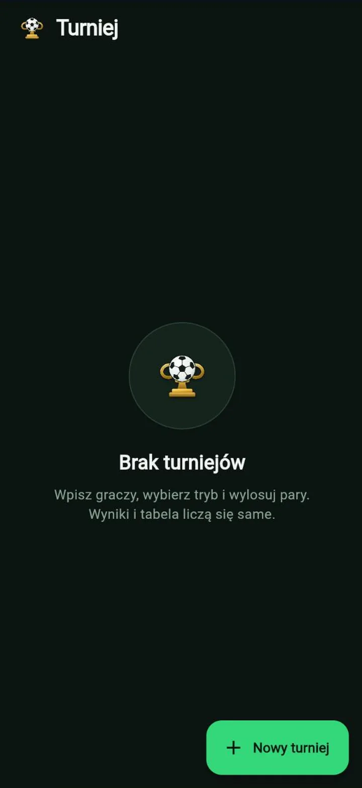

← Firewisp Studio
Dostępna w przeglądarceAndroid w teście następny
Turniej
Wpisz graczy, wybierz tryb, wylosuj pary. Tabela liczy się sama.
Dla wieczorów z piłką na konsoli albo ligi piłkarzyków w pracy: każdy z każdym albo puchar z drabinką i wolnymi losami. Wpisujesz wyniki, tabela i kolejne mecze liczą się same, stoper jest wbudowany. Wszystko zostaje na urządzeniu.

Ekrany
Co tu robisz
- Dwa formatyKażdy z każdym z pełną tabelą albo puchar z drabinką, która radzi sobie z nieparzystą liczbą graczy.
- Wpisujesz wynik, reszta samaPunkty, bilans bramek i bezpośrednie mecze liczone po piłkarsku.
- Wbudowany stoperPołowy dowolnej długości, tuż obok wyniku.
- Bez serweraNic nie jest nigdzie wysyłane; turnieje zostają na urządzeniu i można je wyeksportować.